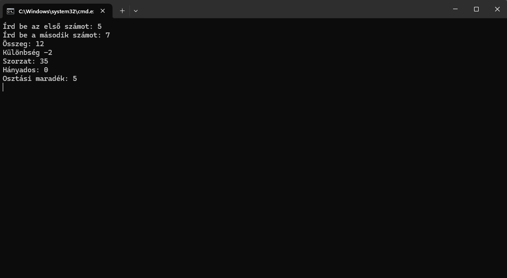
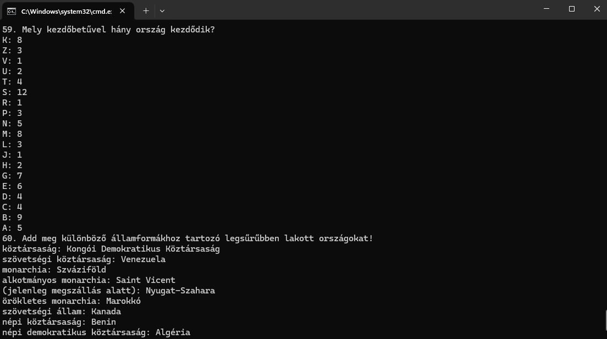

Ebben a témakörben részletesen elmélyedtünk a C# programozási nyelv alapjaiban, kiterjedve a Visual Studio 2022 széleskörű funkcionalitására, valamint a .NET Framework által nyújtott lehetőségek széles skálájára. A kezdeti lépésektől egészen az összetettebb 3000-es feladatokig jutottunk, melyek során megismerkedtünk a nyelv alapvető szintaxisaival és azok alkalmazásával.
Elmerültünk a változók sokszínű világában, megtanultuk, hogyan írhatunk ki információkat a konzolra, hogyan olvashatunk be adatokat onnan vagy akár fájlokból is. Emellett bepillantást nyertünk az algoritmikus gondolkodásba is, miközben elsajátítottuk a for és foreach ciklusok működését és hatékony alkalmazásukat a gyakorlatban. Ezáltal szilárd alapot képezve haladtunk előre a programozás mesterségében, felfedezve annak végtelen lehetőségeit és kihívásait.
